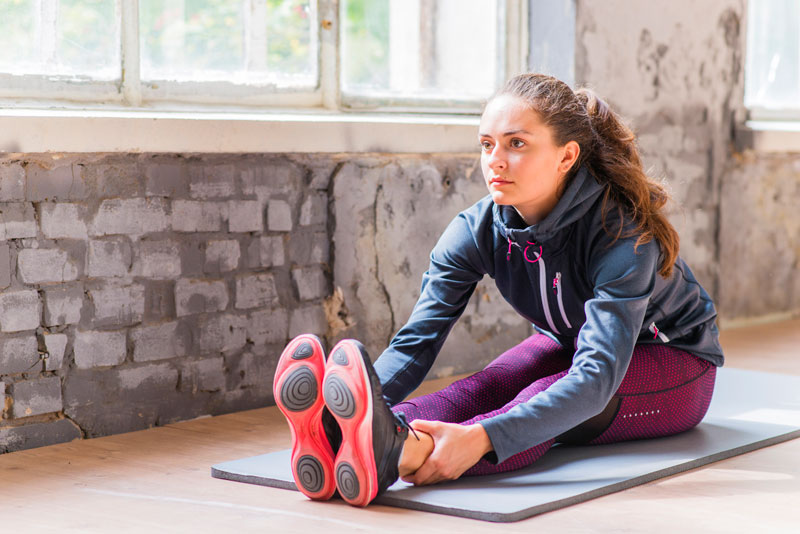

Влияние йоги на физическое и психическое здоровье
Влияние йоги на физическое и психическое здоровье может быть значительным и положительным. Практика йоги включает физические позы (асаны), дыхательные упражнения (пранаяма) и медитацию, которые вместе способствуют достижению баланса и гармонии в теле. Физические асаны в йоге помогают укрепить тело, улучшить гибкость, выносливость и осанку. Они также способствуют улучшению кровообращения, лимфодренажа и общего физического состояния.

Практика дыхательных упражнений (пранаяма) в йоге помогает снизить уровень стресса и тревожности. Регулярная практика дыхания способствует улучшению функции легких, снижению артериального давления и стабилизации нервной системы. Медитация в йоге позволяет успокоить ум, улучшить концентрацию и фокусировку, а также развить умственную ясность и осознанность. Это помогает справляться с негативными эмоциями, улучшать настроение и общее психическое благополучие. Практика йоги также способствует укреплению иммунной системы. Она помогает снизить воспаление в организме, улучшить пищеварение и общую жизненную энергию. Йога также может быть полезной в управлении хроническими болями и улучшении сна. Она способствует расслаблению мышц, снятию напряжения и улучшению качества сна. Регулярная практика йоги помогает улучшить осанку и выравнивание тела. Она способствует развитию силы и гибкости, а также укрепляет мышцы кора.
#2. Техники релаксации и медитация для улучшения здоровья
Техники релаксации и медитация играют важную роль в улучшении физического и психического здоровья. Они помогают снизить уровень стресса, расслабить мышцы, улучшить эмоциональное состояние и повысить общую жизненную энергию. Регулярная практика медитации способствует улучшению концентрации, повышению осознанности и созданию внутреннего покоя. Дыхательные упражнения и медитативные практики помогают стабилизировать нервную систему, снижать тревожность и поддерживать баланс. Эти методы способствуют не только психическому, но и физическому оздоровлению, улучшая качество сна, повышая иммунитет и усиливая общую устойчивость организма к болезням.

Медитация также является мощным инструментом для расслабления и улучшения здоровья. Найдите удобное место для сидения, закройте глаза и сосредоточьтесь на своем дыхании или мантре. Медитация помогает успокоить ум и усилить внутреннюю гармонию.
Прогрессивная мышечная релаксация — это техника, при которой вы постепенно и систематически расслабляете каждую группу мышц в теле. Начните с ног и двигайтесь вверх, сознательно напрягая, а затем расслабляя каждую группу мышц. Эта техника помогает уменьшить физическое напряжение и улучшить ощущение расслабления.
Визуализация — это техника, при которой вы создаете мысленные образы в своем воображении. Вы можете представить себя в месте, где вам спокойно и приятно, например, на пляже или в лесу. Эта техника поможет вам расслабиться и отвлечься от повседневных забот.
Ароматерапия — это использование ароматических и эфирных масел для достижения релаксации. Лаванда, роза, эвкалипт и другие запахи могут быть использованы для создания спокойной и расслабляющей атмосферы. Массаж — еще одна эффективная техника расслабления. Массажная терапия помогает снять мышечное напряжение, улучшить кровообращение и снизить уровень стресса. Активные методы релаксации, такие как йога или тай-чи, сочетают физические упражнения с дыхательными техниками.
#3.Здоровье и фитнес в эпоху цифровых технологий
В современном мире, где технологии играют все более значимую роль в нашей жизни, здоровье и физическая активность становятся неотъемлемой частью повседневности. Цифровые технологии значительно изменили подход к фитнесу и здоровью, предлагая новые инструменты для улучшения физического состояния и общего самочувствия.

Мобильные приложения, носимые устройства и онлайн-платформы помогают отслеживать физическую активность, питание, качество сна и многие другие параметры здоровья. Они предоставляют доступ к персонализированным тренировочным программам и диетам, а также дают возможность консультироваться с врачами и тренерами удаленно.
Технологии позволяют людям заниматься спортом и улучшать свою физическую форму в любое время и в любом месте, а также следить за прогрессом, что способствует поддержанию мотивации. В то же время, важно помнить о важности баланса и избегать чрезмерной зависимости от цифровых устройств, чтобы не забывать о важности реального физического движения и отдыха.
Айжан Баатырова
Статья отлично подчеркивает важность психического здоровья и его влияние на общее качество жизни. Я обязательно применю рекомендации по медитации и устойчивости к стрессу.
Айгул Кадырова
"Я уже знал, что физическая активность полезна, но статья показала, как важно включать различные типы упражнений в тренировочную программу для улучшения общего физического состояния и здоровья."
Нурзат Жакыпова
"Многосторонний подход к здоровью — это то, что мне нравится в этой статье. Она заставила меня задуматься о важности социальных связей и релаксации для общего благополучия."
Перизат Сурабалдиева
"Многосторонний подход к здоровью — это то, что мне нравится в этой статье. Она побудила меня задуматься о важности социальных связей и релаксации для общего благополучия."
Нурзат Азаматова
"Многосторонний подход к здоровью — это то, что мне нравится в этой статье. Она заставила меня задуматься о важности социальных связей и релаксации для общего благополучия."
Алия Рыскулова
"Мне нравится многосторонний подход к здоровью, представленный в этой статье. Она побудила меня задуматься о важности социальных связей и релаксации для общего благополучия."